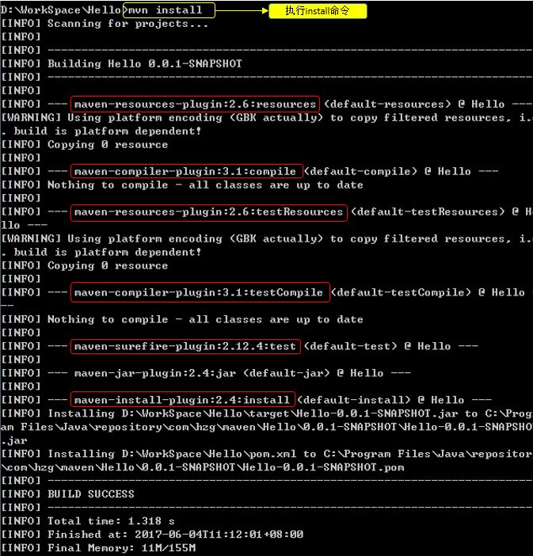

生命周期
Maven有三套相互独立的生命周期，请注意这里说的是“三套”，而且“相互独立”，初学者容易将Maven的生命周期看成一个整体，其实不然。这三套生命周期分别是：
① Clean Lifecycle 在进行真正的构建之前进行一些清理工作。Clean生命周期一共包含了三个阶段：
- pre-clean 执行一些需要在clean之前完成的工作
- clean 移除所有上一次构建生成的文件
- post-clean 执行一些需要在clean之后立刻完成的工作
② Default Lifecycle 构建的核心部分，编译，测试，打包，部署等等。
- validate
- generate-sources
- process-sources
- generate-resources
- process-resources 复制并处理资源文件，至目标目录，准备打包
- compile 编译项目的源代码
- process-classes
- generate-test-sources
- process-test-sources
- generate-test-resources
- process-test-resources 复制并处理资源文件，至目标测试目录
- test-compile 编译测试源代码
- process-test-classes
- test 使用合适的单元测试框架运行测试。这些测试代码不会被打包或部署
- prepare-package
- package 接受编译好的代码，打包成可发布的格式，如 JAR
- pre-integration-test
- integration-test
- post-integration-test
- verify
- install 将包安装至本地仓库，以让其它项目依赖。
- deploy 将最终的包复制到远程的仓库，以让其它开发人员与项目共享
那我们在Hello的项目中执行 mvn install 命令，通过日志看看中间经历了什么？

通过日志我们发现，其实执行mvn install，其中已经执行了compile 和 test 。
总结：不论你要执行生命周期的哪一个阶段，maven都是从这个生命周期的开始执行
插件：每个阶段都有插件（plugin），看上面标红的。插件的职责就是执行它对应的命令。
③ Site Lifecycle 生成项目报告，站点，发布站点。
- pre-site 执行一些需要在生成站点文档之前完成的工作
- site 生成项目的站点文档
- post-site 执行一些需要在生成站点文档之后完成的工作，并且为部署做准备
- site-deploy 将生成的站点文档部署到特定的服务器上